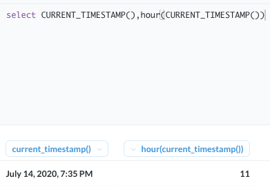
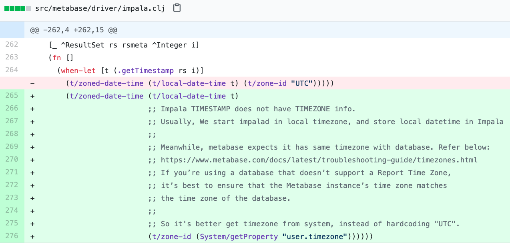
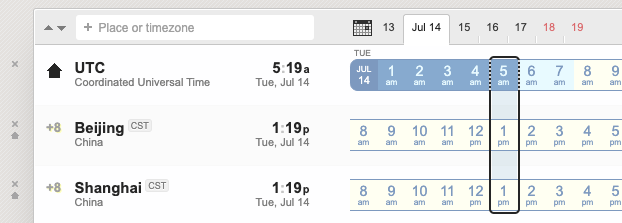
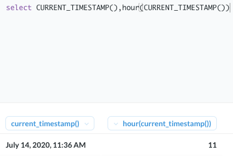

Metabase Impala Driver 时区问题
问题
实际日期是上午11点，而Metabase显示是下午7点。差8小时。
select CURRENT_TIMESTAMP(),hour(CURRENT_TIMESTAMP())

分析
参考：
有几个时区有关的设置：
- Database TimeZone，其中 impalad 启动环境是东八区，TIMESTAMP 不存储时区信息，存储的是东八区本地时间。
- Metabase TimeZone = JVM TimeZone = OS TimeZone，使用的是东八区。
- “Report Time Zone” setting，对 Impala 是不起作用的。
同样的SQL在MySQL上试了下，没问题。问题定位基本在metabase到impala的Driver层。
发现从impala读取TIMESTAMP的值，TIMEZONE写死了UTC，应该是东八区。（Metabase SparkSQL Driver 也有这个问题，因为代码是从那copy的。）

https://github.com/XUJiahua/metabase-impala-driver/commit/0963f9890a9213d53511c61b53870476f8f82cf4
metabase东八区启动，用北京时间显示，就会多加8小时。

修复

Last modified on 2020-07-14